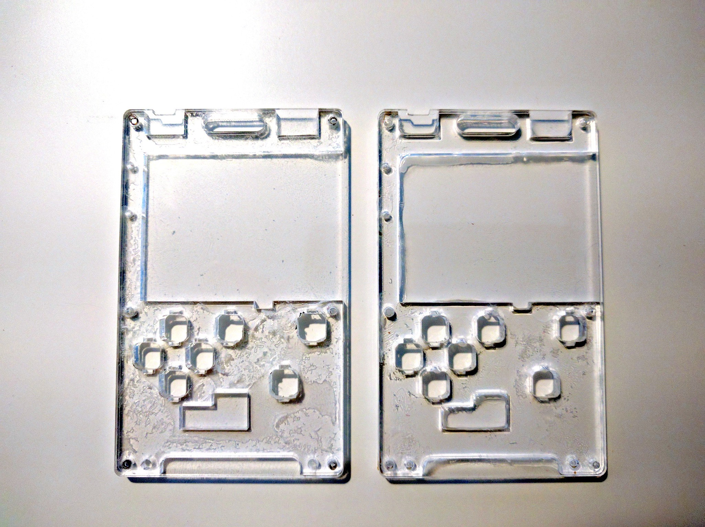

Playing with Glue¶
Published on 2019-09-02 in PewPew M4.
Since I still have a couple of the laser-cut parts left from prototype 3, I decided to make a simple experiment to see how bad they would look like if I simply glued them together with instant glue. Here are two attempts:
The first is using gelled glue, and applying only a little bit of it on the middle layer, then pressing the two layers together. The second is using liquid glue, covering the whole middle layer with it generously, and then pressing the layers together.
I think the first one is completely unacceptable. The second one looks better (the glue traces that are visible are actually not from the glue in between the layers, but my fingerprints from handling the part with dirty fingers). A huge problem with the second one, however, is the excess glue that accumulated in the corners.
Unless there is a special way of doing this on industrial scale, for example with some special machine, I don’t think this is a viable direction.